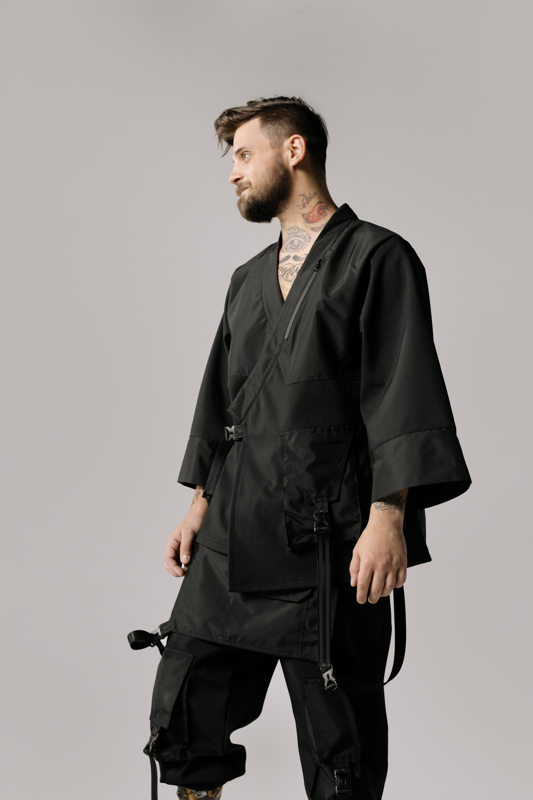

Japón es un país asiático insular, situado en el Océano Pacífico frente a las costas de China y Taiwán. Se compone de un archipiélago de unas 6852 islas y en su limitada superficie de 377.
Su cultura, fuertemente influenciada por la China en sus orígenes, posee unos 2677 años de antigüedad, y se caracteriza por una lengua propia, religiones propias y tradiciones propias, pero amalgamadas en un complejo proceso de sincretismo a lo largo de los siglos. La cultura japonesa se rige en cuanto a relaciones interpersonales por el giri, nombre otorgado al conjunto de deber, obligación y honor, lo cual genera bastante contraste respecto a la tradición individualista de Occidente.
La mayoría de los ciudadanos japoneses no profesan una religión particular, si bien pueden llevar a cabo prácticas vinculadas con el budismo, cristianismo o shintoísmo. Las altas cifras de población irreligiosa —que es completamente diferente a los ateos—, se deben principalmente a los ritmos de vida en la actualidad. Sin embargo, tanto el budismo-sintoísmo como el cristianismo han tenido influencia en la cultura japonesa, que va desde la creencia de espíritus hasta la adopción de formato de bodas occidentales. El sintoísmo o shintoísmo es una religión originada en Japón, a veces considerada la religión indígena de Japón. Junto con el budismo, es una de las dos principales religiones del país.
La vestimenta tradicional japonesa destaca por el uso de prendas únicas como el kimono El kimono es la indumentaria tradicional japonesa que fue de uso común hasta hace 60 años. La palabra kimono significa ki (vestir) y mono (cosa), es decir vestido o ropa. Actualmente se ha designado este término para la indumentaria tradicional japonesa en general, también se le conoce como wafuku para distinguirlo del youfuku (las prendas occidentales).
el kimono se lleva en las bodas, graduaciones, las ceremonias del té, la danza japonesa, el teatro kabuki y el noh, lo lleva la corte imperial y los sacerdotes sintoístas, bonzos budistas, las geishas y los intérpretes del rakugo, por su parte la yukata puede llevarla quien quiera y como quiera. Un dato curioso sobre el kimono, además de usar zapatos y calcetines especiales, también tienes que llevar una ropa interior llamada Nagajuban es una especie de kimono ligero y transparente, mientras que con la Yukata puedes usar lo que te guste debajo,
el Yukata se lleva en el verano al ser de una tela más fresca y es usada también en lugares muy cálidos, otra característica es que es usada para los baños onsen, aunque para este caso es una yukata mucho más ligera de lo normal. Otra clara diferencia entre kimono y yukata es que el kimono tiene al menos dos fajas anchas llamadas obi, una va alrededor de la cintura y la otra se coloca de forma diagonal sobre el torso, mientras que la yukata lleva solo una faja gruesa alrededor de la cintura. También vale la pena destacar que, el kimono es una prenda con muchas más reglas implícitas, al usarlo debe ser acompañado de las Getas, unas sandalias bajas hechas de algodón y cuero que son usadas con un calcetín especial, mientras que con la yukata no hacen falta.
Las principales características que describen la gastronomía japonesa se podrían definir en tres palabras: sencillez, sabores naturales y refinamiento. siendo Japón un archipiélago, su cocina está altamente influenciada por el mar, lo que determina una gran pasión por los pescados y mariscos frescos. Una comida japonesa estándar, consiste generalmente de una taza de arroz japonés (gohan) como “shushoku” con acompañamiento de “tsukemono”, una taza de sopa y una variedad de platos que dan el sabor principal del platillo (okazu), que pueden ser pescado, carne, aves o vegetales. Se tiene como costumbre nombrar las comidas dependiendo de la cantidad de “okazu” que acompañan al arroz y a la sopa. sencilla se le llama “ichijū-issai”¨ (una sopa y un plato), pero la comida tradicional es la (ichijū-sansai), con una sopa y tres platos, cocinados cada uno con una técnica de preparación diferente. platillos importantes en la gastronomía japonesa son:
Por ultimo hay que recordar que la cocina japonesa es extensa y por supuesto cada provincia tiene especialidades.
En Japón se practica una amplia diversidad de deportes, tanto tradicionales como modernos, como las artes marciales o los deportes occidentales.
Sumo:
Es un deporte de combate donde dos luchadores o rikishi se enfrentan con el objetivo de lanzar su rival al suelo o fuera del área circular. Es de origen japonés, es considerado un arte en su país y mantiene gran parte de la tradición sintoísta antigua. Es el deporte nacional del Japón.
Kendo:
Arte marcial japonés moderno formativo que destaca por el uso y manejo del sable de bambú o shinai. El nombre significa 'camino del sable' y proviene de los ideogramas 剣 (ken, 'sable', 'espada') y 道 (dō, 'camino', 'sendero', 'vía'). El kendo es considerado el heredero directo de varias de las escuelas de esgrima japonesas conocidas como ryū; siendo influido especialmente por la escuela Ono-ha Ittō-ryū; en estas escuelas o ryū se entrenaban los legendarios guerreros medievales japoneses o samurái en el arte clásico de la esgrima con sable o kenjutsu.
Judo:
El judo es un deporte de combate, el cual se basa en derribar o proyectar al contrario contra el piso, éste suele ponerse en práctica sobre un tatami (superficie que amortigua las caídas de los peleadores), la indumentaria que se suele utilizar es denominada “Judogui” la cual es bastante resistente a los roces y jalones, este deporte es bastante exigente y por ello es necesario llevar a cabo una preparación tanto física (técnicas y táctica) como psicológica para que el atleta pueda cumplir con la exigencias del mismo.
Kárate:
Es un arte marcial tradicional basada en algunos estilos de las artes marciales chinas (wushu), y en menor medida en otras disciplinas provenientes del sureste asiático proveniente de Okinawa (Japón).
Aikido:
El Aikido, que es un arte que hunde sus raíces en la casta guerrera de los samuráis japoneses y que por consiguiente se estudia partiendo del conflicto físico o corporal, interesa en muy distintos ámbitos del mundo moderno por su original y pacifista gestión del conflicto. Su objetivo es el control pacífico de las situaciones, por eso forma parte del programa de formación de la policía antidisturbios de Tokyo y de numerosos programas de gestión de la rabia y la agresividad.
Béisbol:
Considerado como uno de los deportes de mayor antigüedad y uno de los más populares en la actualidad. Conocido también con el nombre de pelota, el béisbol es un tipo de deporte competitivo de mucha habilidad que se juega con una bola dura y un bate entre dos equipos que constan de nueve jugadores cada uno. Es visto como deporte nacional de Cuba y de Estados Unidos, ya que su tradición y popularidad son muy importantes, pero también se juega en muchas partes del mundo por personas de todas las edades.
Fútbol:
Es un deporte en el que dos equipos compuestos por once jugadores se enfrentan entre sí. Cada equipo, que dispone de diez jugadores que se mueven por el campo y de un portero (también conocido como arquero o guardameta), tratará de lograr que la pelota (balón) ingrese en el arco (portería) del equipo rival, respetando diversas reglas.

El templo Shitennō-ji (四天王寺) de Osaka es el templo budista más antiguo de Japón, con más de 1.400 años de antigüedad. Aún así, la estructura que podemos ver hoy día data de 1963, fecha en la que se reconstruyó el templo. Shitennoji es uno de los lugares más visitados de Osaka por el turismo. Desde la antigüedad siempre ha estado muy bien valorado su belleza. Actualmente forma parte de la lista de los grandes monumentos de Japón.
Hase-dera, comúnmente llamado Hase-kannon, es uno de los templos budistas de la ciudad de Kamakura, en la prefectura de Kanagawa, Japón, famoso por albergar una enorme estatua de madera de Kannon.
Fushimi Inari Taisha, consagrado a Inari, la deidad de las buenas cosechas y el éxito en los negocios, es el santuario Inari más importante de todo Japón. El arco de puertas torii de un vibrante color naranja, que se torna casi interminable en su camino hacia la cima del monte Inari, convierte a este lugar en un enclave de impresionante belleza y una de las imágenes más famosas de Japón.

Kawasaki Daishi es el nombre popular de Heiken-ji, un templo budista en Kawasaki, Japón. Fundada en 1128, es la sede de la secta Chizan del budismo Shingon. Kawasaki Daishi es un templo popular para el hatsumōde.
towasan Kiyomizudera se ubica en la ciudad de Kioto, en Japón, y forma parte de los Monumentos históricos de la antigua Kioto, pertenecientes al Patrimonio de la Humanidad declarado por la Unesco. Kiyomizu-dera, que en japonés significa “templo del agua pura”, fue construido en el año 778 en las colinas del este de Kioto, en el mismo lugar en el que se encuentra la cascada Otowa. El edificio sobresale de la colina y ofrece a los visitantes unas vistas espectaculares de la ciudad.

A diferencia de la mayoría de los santuarios Shinto, donde la puerta torii se ubica en el camino hacia el recinto, la torii está en el mar y se alinea, perfectamente, con el Hoden (santuario principal). La O-Torii (Gran Puerta Torii), que se eleva en el mar, a unos 16,8 metros de altura, se encuentra entre las estructuras más interesantes del Santuario Itsukushima. Es considerado como uno de los 3 paisajes más bellos de todo Japón.
es un templo budista que se encuentra en Nara, Japón. Alberga una estatua gigante del Buda Vairocana (llamado dainichi en japonés; significa "Buda que brilla a lo largo del mundo como el sol"), conocido simplemente como daibutsu (Gran Buda), al igual que otras grandes figuras de Buda en Japón. El templo también sirve como los cuarteles japoneses de la escuela Kegon del budismo. Aun habiendo sido reconstruido 2 veces por causa de incendios provocados por la guerra siendo así un 33% más pequeño que el original, ostenta el récord mundial siendo la construcción de madera más grande del mundo.

a historia del templo es curiosa. La leyenda dice que dos pescadores pescaron una estatua de oro de Kannon —el bondadoso personaje que alcanzó el nirvana– en el que ahora es el río Sumida. Intentaron devolver la figura al río varias veces, pero la estatua siempre volvía. Se consagró cuando la reconocieron como Kannon. El Templo Sensoji se fundó en 628, pero el actual edificio de color carmesí es mucho más moderno; fue reconstruido después de su destrucción durante la segunda guerra mundial.

Su nombre oficial es Higashiyama Jishoji y es uno de los subtemplos del Shokokuji. Se dice que el nombre de Ginkaku-ji («Templo del Pabellón de Plata») tiene su origen en el periodo Edo, en el que se lo denominó así en contraste con el Kinkakuji («Templo del Pabellón Dorado»). Tiene como origen una villa de retiro en Higashiyama construida por Ashikaga Yoshimasa, octavo sogún del gobierno militar de Muromachi, que se convirtió tras su muerte en un templo de la escuela Rinzai, al que se denominó Jishoji por asociación con el nombre budista póstumo de Yoshimasa, Jishoin.


{kind=link}
{kind=link}
{kind=link}
{kind=link}
{kind=link}
{kind=link}
{kind=link}
{kind=link}
{kind=link}
{kind=link}
{kind=link}
{kind=link}
{kind=link}
{kind=link}
{kind=link}
{kind=link}
{kind=link}
{kind=link}
{kind=link}
{kind=link}